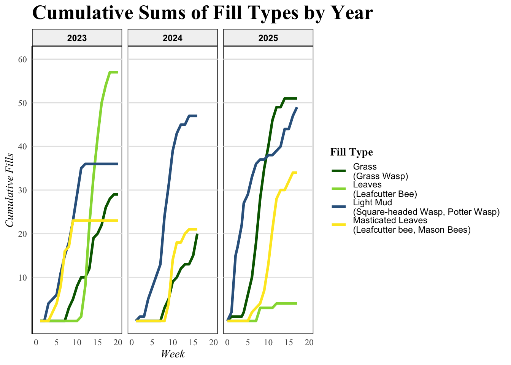
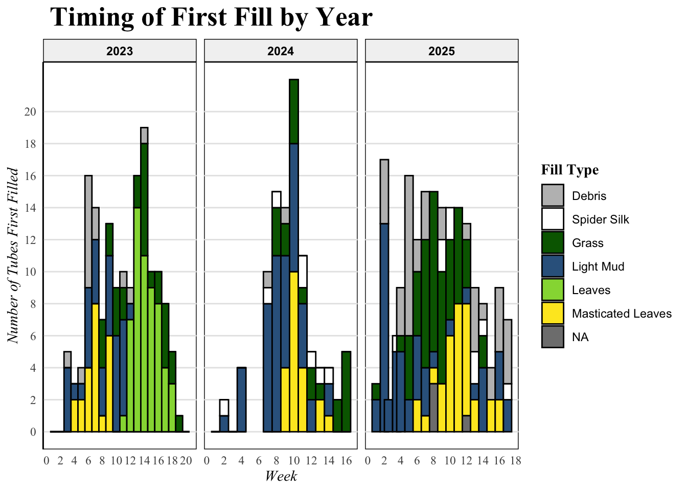
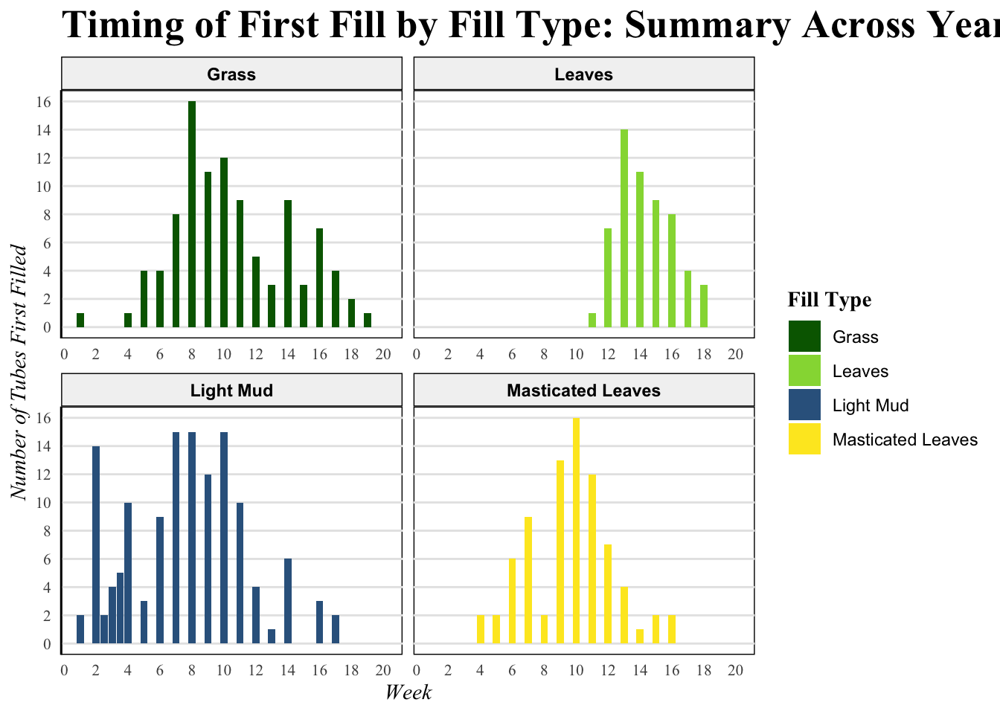
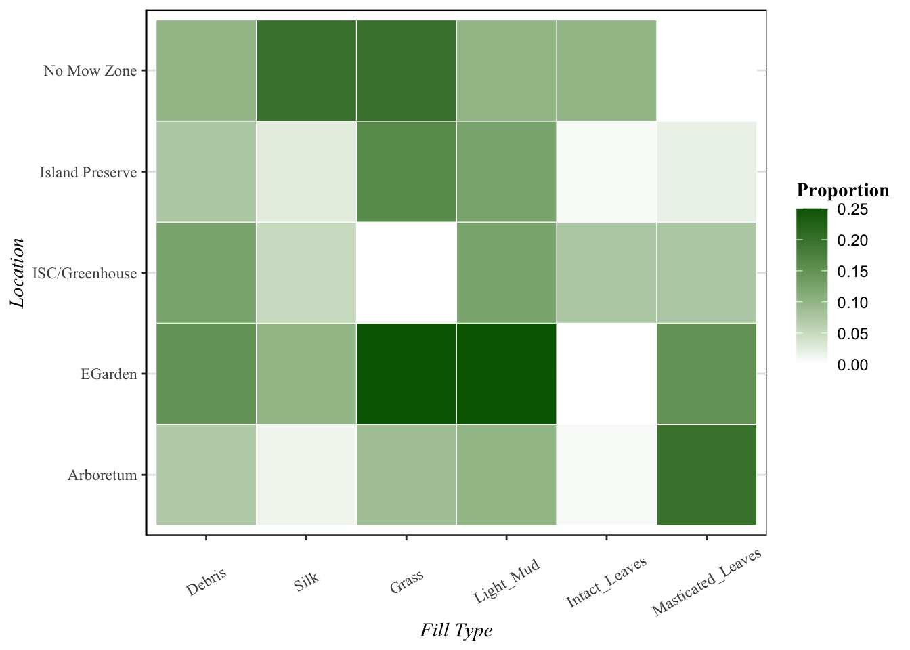
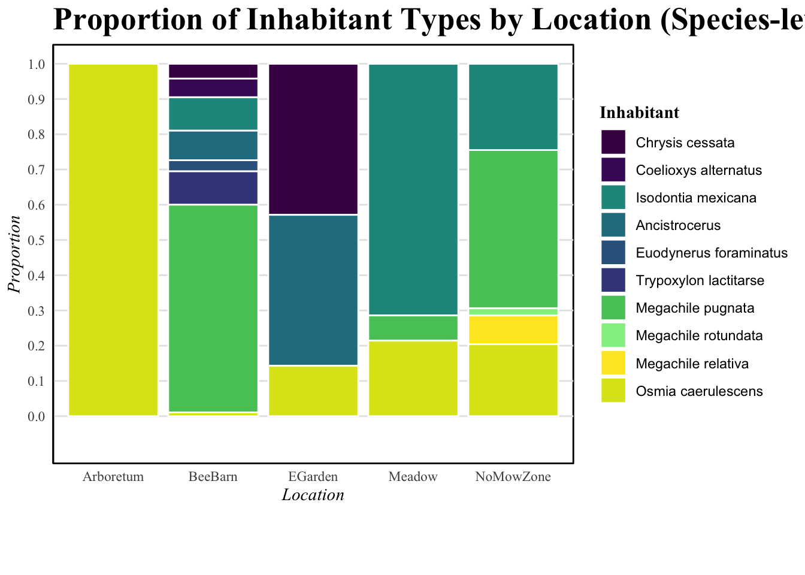

# DATA IMPORTS HERE
# Example:
paged_table(ID_freq_comp)paged_table(fill_df)paged_table(full_cum_clean)paged_table(combined_df)This project investigates the diversity, seasonal activity, and habitat relationships of cavity-nesting bees and wasps in Geneseo, New York. Artificial nesting boxes were monitored across multiple habitats from 2023–2026 to examine how environmental conditions influence nesting behavior, occupancy patterns, and species diversity.
Solitary bees and wasps are insects with unique reproductive patterns that involve the construction of nests in pre-existing cavities, such as hollow reed stems or holes from wood-boring insects. Cavity-nesting bees and wasps modify these nests by partitioning the tube using natural materials like mud, grass, and masticated leaves and provisioning their young with pollen or arthropods. As a result of their specific reproductive requirements, cavity-nesting bees and wasps can be used as indicator species for the overall impact of habitat management in a given area. This study aims to analyze the diversity and abundance of cavity-nesting species in Geneseo, NY, assessing fill types, temporal patterns, and environmental factors influencing these individuals across years and sites. Cavity-nesting species can be monitored and supported using nesting boxes containing artificial tubes. This study examines solitary cavity-nesting bees and wasps in Geneseo, NY, using artificial nesting structures (“bee boxes”) to monitor their activity, diversity, and habitat preferences over multiple years. Fill types were analyzed and categorized as mud, grass, masticated leaves, or intact leaves. These fill types serve as indicators of which taxa are present, since different families of cavity-nesters use distinct materials. This information was used to gain baseline information on local cavity-nesting bee and wasp temporal patterns, identities, and environmental niches.
This study examines:
The primary research questions include:
The dataset combines multiple CSV files collected during weekly monitoring of cavity-nesting bee and wasp boxes between 2023 and 2026.
These files include:
# DATA IMPORTS HERE
# Example:
paged_table(ID_freq_comp)paged_table(fill_df)paged_table(full_cum_clean)paged_table(combined_df)The primary unit of observation is:
| Variable | Description |
|---|---|
Week |
Week of seasonal monitoring |
Year |
Sampling year |
Location |
Habitat site |
Fill_Type |
Material used to seal tube |
Number_of_Tubes_First_Filled |
Number of newly occupied tubes |
Inhabitant |
Species or taxonomic identity |
The nesting boxes were placed in several habitat types around SUNY Geneseo and the Island Preserve, including:
The raw datasets required several cleaning and preparation steps before analysis.
These transformations included:
# DATA WRANGLING CODE HERE
# fill_2023_cleaned <- fill_2023 |>
# mutate(Year = 2023,
# Number_of_Tubes_First_Filled = ifelse(is.na(Number_of_Tubes_First_Filled), 0, Number_of_Tubes_First_Filled))
# fill_2024_cleaned <- fill_2024 |>
# mutate(Number_of_Tubes_First_Filled = Number_of_Tubes_First.Filled,
# Number_of_Tubes_First_Filled = ifelse(is.na(Number_of_Tubes_First_Filled), 0, Number_of_Tubes_First_Filled),
# Year = 2024)|>
# select(Week, Year, Number_of_Tubes_First_Filled, Fill_Type)
#
# fill_2025_cleaned <- fill_2025_clean|>
# mutate(Year = 2025,
# Number_of_Tubes_First_Filled = Number_of_Tubes_First.Filled,
# Number_of_Tubes_First_Filled = ifelse(is.na(Number_of_Tubes_First_Filled), 0, Number_of_Tubes_First_Filled))|>
# select(Week, Year, Number_of_Tubes_First_Filled, Fill_Type)
#
# combined_df <- bind_rows(fill_2023_cleaned, fill_2024_cleaned, fill_2025_cleaned)
#
# fill_2023_cum <- fill_2023_cleaned |>
# mutate(cum_sum = cumsum(Number_of_Tubes_First_Filled))
# fill_2024_cum <- fill_2024_cleaned |>
# mutate(cum_sum = cumsum(Number_of_Tubes_First_Filled))
# fill_2025_clean_cum <- fill_2025_cleaned |>
# mutate(
# cum_sum = cumsum(Number_of_Tubes_First_Filled)
# )
#
# ID_freq_comp = read.csv("Data Analysis/Proportion_of_Fill_By_Location - 2025-2026.csv")
# sample_sizes = data.frame(Location = c("Arboretum", "ISC/Greenhouse", "No Mow Zone", "EGarden", "Island Preserve"),
# Sample_Size = c(140, 40, 20, 20, 160))
#
#
# ID_freq_comp$Fill_Type <- factor(ID_freq_comp$Fill_Type,
# levels = c("Empty", "Debris", "Silk", "Grass", "Light_Mud",
# "Intact_Leaves", "Masticated_Leaves"))
#
#
# fill_2023_cum_fill <- fill_2023_cleaned |>
# group_by(Fill_Type)|>
# mutate(cum_sum = cumsum(Number_of_Tubes_First_Filled))
# fill_2024_cum_fill <- fill_2024_cleaned |>
# group_by(Fill_Type)|>
# mutate(cum_sum = cumsum(Number_of_Tubes_First_Filled))
# fill_2025_clean_cum_fill <- fill_2025_cleaned |>
# group_by(Fill_Type)|>
# mutate(
# cum_sum = cumsum(Number_of_Tubes_First_Filled)
# )
#
# full_cum <- bind_rows(fill_2023_cum, fill_2024_cum, fill_2025_clean_cum)
# full_cum_fill <- bind_rows(fill_2023_cum_fill, fill_2024_cum_fill, fill_2025_clean_cum_fill)
# full_cum_clean <- full_cum |>
# mutate(
# Fill_Type = recode(Fill_Type,
# "Leaves" = "Leaves",
# "Intact_Leaves" = "Leaves" # combine here
# )
# ) |>
# filter(!Fill_Type %in% c("Silk", "Debris"))
#
# full_cum_clean_fill <- full_cum_fill |>
# mutate(
# Fill_Type = recode(Fill_Type,
# "Leaves" = "Leaves",
# "Intact_Leaves" = "Leaves" # combine here
# )
# ) |>
# filter(!Fill_Type %in% c("Silk", "Debris"))
# bee_fill_comp <- c(
# "Grass" = "Grass\n(Grass Wasp)",
# "Leaves" = "Leaves\n(Leafcutter Bee)",
# "Light_Mud" = "Light Mud\n(Square-headed Wasp, Potter Wasp)",
# "Masticated_Leaves" = "Masticated Leaves\n(Leafcutter Bee, Mason Bee)",
# "Empty" = "Empty"
# )
#
#
#
#
#
# #Make leaves and intact leaves the same thing, remove non-cavity nester fill
# full_cum_clean <- full_cum |>
# mutate(
# Fill_Type = recode(Fill_Type,
# "Leaves" = "Leaves",
# "Intact_Leaves" = "Leaves" # combine here
# )
# ) |>
# filter(!Fill_Type %in% c("Silk", "Debris"))
#
# full_cum_clean_fill <- full_cum_fill |>
# mutate(
# Fill_Type = recode(Fill_Type,
# "Leaves" = "Leaves",
# "Intact_Leaves" = "Leaves" # combine here
# )
# ) |>
# filter(!Fill_Type %in% c("Silk", "Debris"))
# bee_fill_comp <- c(
# "Grass" = "Grass\n(Grass Wasp)",
# "Leaves" = "Leaves\n(Leafcutter Bee)",
# "Light_Mud" = "Light Mud\n(Square-headed Wasp, Potter Wasp)",
# "Masticated_Leaves" = "Masticated Leaves\n(Leafcutter Bee, Mason Bee)",
# "Empty" = "Empty"
# )Initial summaries were used to examine:
# SUMMARY STATISTICS TABLE HERE
summary(ID_freq_comp) Location Fill_Type Proportion_of_Fill Tally.of.Fill
Length :35 Empty :5 Min. :0.00000 Length :35
N.unique : 5 Debris :5 1st Qu.:0.06071 N.unique :12
N.blank : 0 Silk :5 Median :0.10000 N.blank : 8
Min.nchar: 7 Grass :5 Mean :0.14286 Min.nchar: 0
Max.nchar:15 Light_Mud :5 3rd Qu.:0.18125 Max.nchar:28
Intact_Leaves :5 Max. :0.58750
Masticated_Leaves:5
Number.Filled Total.Tubes Second.count Sample_Size
Min. : 0.00 Min. : 20 Min. : 1.00 Min. : 20
1st Qu.: 2.00 1st Qu.: 20 1st Qu.: 3.25 1st Qu.: 20
Median : 4.00 Median : 40 Median : 8.00 Median : 40
Mean :10.86 Mean : 76 Mean :11.00 Mean : 76
3rd Qu.:11.00 3rd Qu.:140 3rd Qu.:18.00 3rd Qu.:140
Max. :94.00 Max. :160 Max. :26.00 Max. :160
NAs :29 summary(fill_df) Week Fill_Type Number_of_Tubes_First_Filled Year
Min. : 0.000 Length :179 Min. : 0.000 Min. :2023
1st Qu.: 4.000 N.unique : 4 1st Qu.: 0.000 1st Qu.:2023
Median : 9.000 N.blank : 0 Median : 1.000 Median :2024
Mean : 9.402 Min.nchar: 5 Mean : 2.323 Mean :2024
3rd Qu.:14.000 Max.nchar: 17 3rd Qu.: 4.000 3rd Qu.:2025
Max. :20.000 Max. :14.000 Max. :2025
NAs :21 summary(full_cum_clean) Week Fill_Type Number_of_Tubes_First_Filled Year
Min. : 0.000 Length :198 Min. : 0.000 Min. :2023
1st Qu.: 4.000 N.unique : 4 1st Qu.: 0.000 1st Qu.:2023
Median : 9.000 N.blank : 0 Median : 0.000 Median :2024
Mean : 9.288 Min.nchar: 5 Mean : 1.874 Mean :2024
3rd Qu.:14.000 Max.nchar: 17 3rd Qu.: 3.000 3rd Qu.:2025
Max. :20.000 Max. :14.000 Max. :2025
cum_sum
Min. : 0.00
1st Qu.: 20.50
Median : 71.00
Mean : 74.69
3rd Qu.:129.50
Max. :182.00 summary(combined_df) Week Fill_Type Number_of_Tubes_First_Filled Year
Min. : 0.000 Length :284 Min. : 0.000 Min. :2023
1st Qu.: 4.000 N.unique : 7 1st Qu.: 0.000 1st Qu.:2023
Median : 9.000 N.blank : 0 Median : 1.000 Median :2024
Mean : 9.194 Min.nchar: 4 Mean : 1.965 Mean :2024
3rd Qu.:14.000 Max.nchar: 17 3rd Qu.: 3.000 3rd Qu.:2025
Max. :20.000 Max. :14.000 Max. :2025
NAs :58 # OPTIONAL STATIC SUMMARY GRAPH HERE
ggplot(full_cum_clean,
aes(x = Week,
y = cum_sum,
color = factor(Year),
group = Year)) +
geom_smooth()+
labs(
y = "Cumulative Fills",
title = "Cumulative Sums of Fill Types by Year",
color = "Year"
) +
scale_color_manual(
values = c("#FDE725FF", "#29AF7FFF", "#33638DFF"),
labels = c("2023", "2024", "2025")) +
theme_minimal() +
mytheme +
theme(
legend.text = element_text(size = 6)
)
ggplot(full_cum_clean_fill,
aes(x = Week,
y = cum_sum,
color = Fill_Type)) +
geom_line(linewidth = 1.2) +
facet_wrap(~Year) +
labs(
y = "Cumulative Fills",
title = "Cumulative Sums of Fill Types by Year",
color = "Fill Type"
) +
scale_color_manual(
values = my_colors,
labels = bee_fill_comp
) +
scale_y_continuous(
breaks = c(10, 20, 30, 40, 50, 60),
limits = c(0, 60)
) +
theme_minimal() +
mytheme
Across all years, occupancy generally increased through the middle of the summer before declining toward September. Different fill materials appeared at distinct periods of the season, reflecting the reproductive timing of different bee and wasp taxa.
# OPTIONAL DESCRIPTIVE TIME SERIES GRAPH HEREThis visualization compares cumulative nesting activity across years. The graph highlights differences in occupancy timing and overall seasonal productivity.
# INTERACTIVE PLOTLY GRAPH HERE
combined_df$Fill_Type <- factor(combined_df$Fill_Type,
levels = c("Debris", "Silk", "Grass", "Light_Mud", "Leaves",
"Masticated_Leaves"))
ggplot(combined_df, aes(x=Week, y=Number_of_Tubes_First_Filled,fill=Fill_Type)) +
facet_wrap(~Year, scales = "free_x")+
scale_fill_manual(values = my_colors, labels = my_labels) +
# scale_fill_viridis_d() +
labs(title = " Timing of First Fill by Year", x = "Week", y = "Number of Tubes First Filled", fill = "Fill Type") +
geom_bar(position="stack", stat="identity", color = "black", width = 1) +
#For scaling the tickmarks along the axes
scale_x_continuous(breaks=seq(0,20,by=2)) +
scale_y_continuous(breaks=seq(0,20,by=2))+
theme_minimal() +
mytheme
The visualization demonstrates how nesting activity changes over time and allows comparison between years. Hover interactions provide exact occupancy values for each week.
Different fill materials correspond to different nesting taxa. This animation tracks how fill-type composition changes throughout the season.
# ANIMATED GGANIMATE GRAPH HERE
ggplot(fill_df,
aes(x = Week,
y = Number_of_Tubes_First_Filled,
fill = Fill_Type)) +
facet_wrap(
~Fill_Type,
scales = "free_x",
labeller = labeller(Fill_Type = c(
"Light_Mud" = "Light Mud",
"Masticated_Leaves" = "Masticated Leaves",
"Intact_Leaves" = "Intact Leaves"
))
) +
geom_bar(position = "stack", stat = "identity") +
scale_fill_manual(
values = my_colors,
labels = c(
"Grass" = "Grass",
"Leaves" = "Leaves",
"Light_Mud" = "Light Mud",
"Masticated_Leaves" = "Masticated Leaves"
)
) +
labs(
title = "Timing of First Fill by Fill Type: Summary Across Years",
x = "Week",
y = "Number of Tubes First Filled",
fill = "Fill Type"
) +
scale_x_continuous(breaks = seq(0, 20, by = 2)) +
scale_y_continuous(breaks = seq(0, 20, by = 2)) +
theme_minimal() +
mytheme +
theme(
axis.text = element_text(size = 8)
)
The animation illustrates the seasonal succession of nesting activity, showing how mud-associated wasps appear earlier in the season while leafcutter bees become more common later in the summer.
Habitat conditions strongly influenced occupancy patterns and diversity across locations.
# HABITAT COMPARISON VISUALIZATION HERE
ID_freq_comp %>%
filter(Fill_Type != "Empty") %>%
ggplot(aes(x = Fill_Type, y = Location, fill = Proportion_of_Fill)) +
geom_tile(color = "white") +
scale_fill_gradient(low = "white", high = "darkgreen") +
labs(x = "Fill Type", y = "Location", fill = "Proportion") +
mytheme +
theme(
axis.text.x = element_text(angle = 30, vjust = .5)
)
The visualization compares the proportional composition of fill types among habitat locations and highlights ecological differences between managed and naturalized environments.Relationships between fill materials and occupant taxa can also be visualized to better understand ecological interactions within nesting communities.
Species-level identifications provide insight into the diversity of cavity-nesting insects observed across locations.

The results indicate that certain habitats supported greater species richness and higher proportions of native pollinator taxa.
The goal of this research is to gain baseline information on the cavity-nesting bees and wasps in Geneseo, NY. Populations of wild bees are declining as a result of declines in floral resources. Monitoring and supporting cavity nesting bees and wasps is crucial; they are beneficial to both local ecosystems and economies. Surveying bee and wasp species provides information on the ecological state of an area. Due to their specific habitat requirements, trophic diversity, and roles as pollinators, cavity-nesters can serve as an indication of environmental change and influences of invasive species. Wild bees pollinate flowers when feeding on nectar and pollen. Solitary adult wasps also feed on nectar providing pollination. Wasp larvae however, feed on arthropod populations as the adults lay their eggs with arthropod provisions. Crops and plants rely on cavity-nesting pollinators to facilitate reproduction. Increased wildflowers plantings result in increased wild bee diversity and abundance. This has been utilized by commercial farms, which plant wildflower gardens adjacent to agricultural fields in order to take advantage of these ecological links. In Geneseo, a town dominated by agricultural fields, monitoring cavity-nesting bees and wasps is essential to local communities.
Several major patterns emerged:
These findings contribute to broader efforts aimed at monitoring pollinator populations and understanding how habitat management influences biodiversity in agricultural and suburban landscapes.